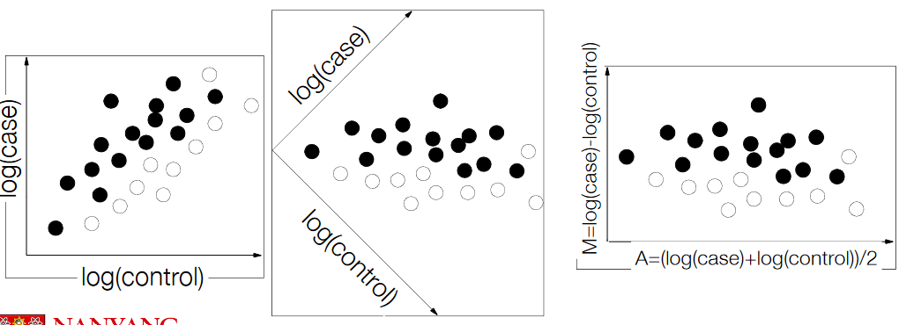
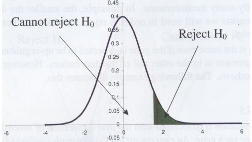
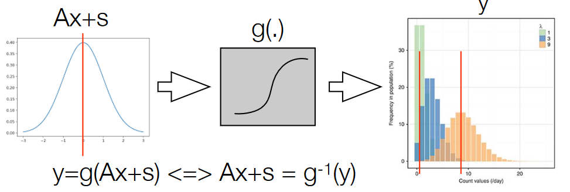
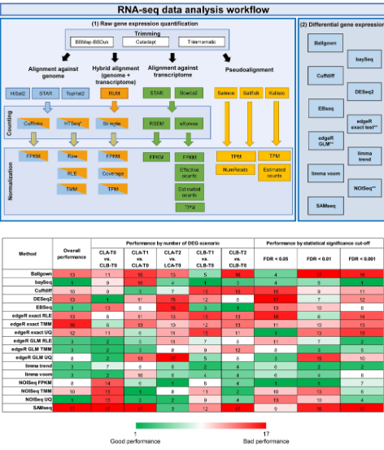
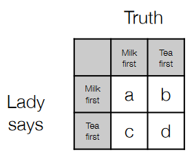
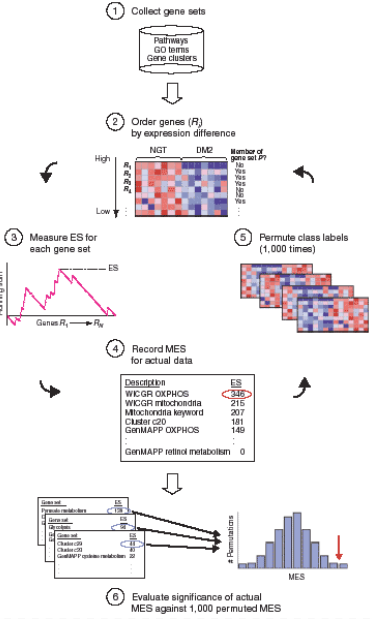
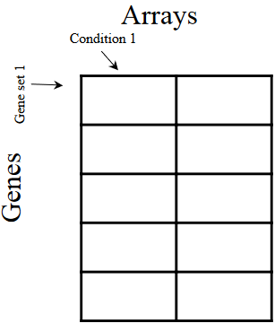

7 Transcriptomes: Differential Expression to Enrichment Analyses
Let’s explore how we go from raw read counts to identifying differential gene expression in a straightforward way.
Imagine you have a collection of different-sized baskets, each containing different numbers of apples (gene counts). Your goal is to figure out which baskets have more or fewer apples, but you need a consistent way to do this.
Now, in the world of gene expression analysis, different software tools come with their own methods for counting genes, but they typically start with unnormalized count data, just like having apples in baskets without any adjustments.
In your analysis, when you use a method like pseudoalignment, it not only provides raw counts (the number of apples in each basket) but also normalized values called TPM (Transcripts per Million), which are like having apples per million baskets.
However, when it comes to finding genes that are differentially expressed (meaning they have significantly more or fewer apples), we usually work with the raw count data, not TPM values. It’s like counting apples directly rather than adjusting for the number of baskets.
Here’s a standard workflow:
Read in Raw Count Data
You start by bringing in the raw count data (the number of apples in each basket) into a data analysis tool like R.
Normalization and Modeling
Then, you apply software-specific normalization methods to make the data more suitable for analysis. You might also use a (generalized) linear model, which is like a mathematical tool, to calculate fold changes (how much more or less) for each gene and their associated p-values (a measure of significance).
In essence, you’re like a fruit analyst, taking the raw count data, adjusting it if needed, and using statistical models to figure out which baskets have significantly different numbers of apples. This is how we identify differential gene expression, helping us understand which genes are playing a more significant role in specific conditions or situations.
7.1 Fundamental Metrics
7.1.1 Fold Change
Let’s discuss the concept of “Fold Change” and how it serves as a measure of differential gene expression.
Imagine you have two baskets of apples: one from a case scenario (like a treatment group) and the other from a control scenario (like a standard group). You want to know if the number of apples in the case basket is different from the control basket. Fold change is a simple way to express this difference.
Here’s how it works:
Calculating Fold Change
\[\begin{equation} \log\left(\frac{\text{Case}}{\text{Control}}\right) = \log\left(\text{Case}\right) - \log\left(\text{Control}\right) \end{equation}\]
To calculate fold change, you take the number of apples (gene counts) in the case basket and divide it by the number of apples in the control basket. This ratio tells you how many times more (or less) apples there are in the case compared to the control.
Log2 Transformation
Fold changes are often reported in the log2 domain because it has some useful properties. When you take the logarithm of the fold change, it simplifies the interpretation. Also, it’s symmetric, meaning that if a gene is upregulated (more apples in the case), it will have a positive value, and if it’s downregulated (fewer apples in the case), it will have a negative value.
Relationship to Difference
The \(\log2\) of the fold change is related to the difference between the case and control. It’s like expressing the change in the number of apples as a difference in their logarithms.
Geometric Mean
\[\begin{equation} \log\left(\sqrt{\text{Case} \cdot \text{Control}}\right) = \frac{\log\left(\text{Case}\right) + \log\left(\text{Control}\right)}{2} \end{equation}\]
Another way to express fold change is to use the geometric mean of the apples in the case and control baskets. This is like finding the average number of apples between the two baskets, but in the \(\log2\) domain.
However, fold change has limitations. It works well when you have only one measurement, but it’s not ideal when your data is very noisy or when you’re dealing with complex datasets. Noise can lead to misleading results, which is why more sophisticated statistical methods are often used for differential gene expression analysis in RNA-seq data.
7.1.2 MA Plots
Imagine you have data points on a graph, where one axis represents the log fold change (how much something has changed on a logarithmic scale, like we discussed earlier), and the other axis represents the mean expression (the average level of something, like the average number of apples in our baskets).
Now, when you look at this scatterplot of log fold change, it might be a bit hard to interpret because it’s not as intuitive as seeing the actual fold change values directly. The MA plot comes to the rescue.
Here’s how it works:
Transforming the Axes
The MA plot essentially takes the scatterplot and rotates the axes by 45 degrees. This means that the log fold change values are now on one axis (the M-axis), and the mean expression values are on the other axis (the A-axis).
M-A Axes
The M-axis typically represents the difference between the log fold change in the case and control groups, while the A-axis represents the average of the log fold change values.
Interpretable Plot
Now, instead of looking at log fold change values, you’re looking at something more intuitive – the actual fold change values (like we discussed earlier) on one axis, and the mean expression levels on the other axis. This makes it easier to see how much things have changed in terms of fold change, relative to the average expression.
7.2 Testing Significance
Imagine you have two groups of apples, like a treatment group and a control group. You want to know if there’s a real difference in the number of apples between these two groups or if any difference could have occurred by chance.
Here’s how significance testing works:
Construct a Null Hypothesis
This is like making an educated guess based on the idea that there’s no real difference between the two groups. In a two-sample case (like treatment vs. control), the null hypothesis would be something like “the mean number of apples in the treatment group is the same as the mean number of apples in the control group.” In a one-sample case, it might be “the mean number of apples is not different from zero.”
Test the Hypothesis
You perform statistical tests to see if this null hypothesis holds. The tests rely on certain assumptions about the data, such as following a known distribution (e.g., Student’s t-distribution for comparing means) and having a test statistic with a known distribution under the null hypothesis.
P-value
After running the statistical test, you get a p-value. This p-value tells you the probability of obtaining the data you have (or more extreme data) by chance alone, assuming that the null hypothesis is true. In simple terms, it’s like asking, “How likely is it that the observed difference in apples between the two groups happened purely by random chance?”
Interpreting the P-value
If the p-value is small, typically less than 0.01 or 0.05 (but this threshold can vary), it suggests that the difference you observed is unlikely to have occurred purely by chance. In other words, it’s statistically significant. This means you have evidence to reject the null hypothesis and conclude that there’s likely a real difference between the groups.
7.2.1 P Values

Imagine you’re playing a game with a coin. You want to know if the coin is fair or biased, meaning it might not land on heads and tails with equal probability. To test this, you flip the coin a bunch of times and record the outcomes.
Now, the null hypothesis here is that the coin is fair. In other words, there’s no bias; it’s just like any other regular coin. The alternative hypothesis is that the coin is biased.
Here’s how p-values come into play:
Calculating the p-value
When you calculate a p-value, you’re essentially figuring out the probability that you would get the results you did (like getting heads or tails a certain number of times) if the null hypothesis were true. In other words, it’s like asking, “What’s the chance that the coin appears biased purely by coincidence?”
Interpreting the p-value
If the p-value is small (typically less than 0.01 or 0.05), it suggests that the results you observed are unlikely to have occurred purely by chance. So, if you find a very small p-value, you might conclude that there’s evidence against the null hypothesis (the coin is fair), and you start to consider the alternative hypothesis (the coin is biased).
In gene expression analysis, p-values work similarly. They tell you the chance that a gene is categorized as differentially expressed (meaning its expression levels have changed significantly) purely by coincidence or random variation.
For example, if you’re comparing gene expression in two groups, a small p-value suggests that the difference you observed in gene expression is unlikely to have happened by random chance alone. It provides evidence that the gene is genuinely differentially expressed between the groups.
7.2.2 Differences Between Conditions
Let’s explore two common statistical tests used to determine if there is a significant difference between two conditions in gene expression analysis, the Student’s t-test and the Wilcoxon Rank Sum (or Wilcoxon Mann-Whitney) test.
Imagine you have data from two groups, like a treatment group and a control group, and you want to know if there’s a real difference between them.
Student’s t-test:
Testing Means: The Student’s t-test is like a tool for comparing the means (averages) of the two groups. It tells you if the difference in means between the groups is statistically significant.
Types of t-tests: There are various versions of the t-test, like the two-sample t-test (comparing two groups), one-sample t-test (comparing one group to a known value), and variations that account for assumptions like equal or unequal variances between the groups.
Assumption: The t-test assumes that the data is normally distributed, meaning it follows a typical bell-shaped curve around the mean. This assumption is important because the test relies on normal distribution properties.
Wilcoxon Rank Sum (or Wilcoxon Mann-Whitney) test:
Testing Medians: The Wilcoxon Rank Sum test, also known as the Mann-Whitney test, is different from the t-test. It compares the location, specifically the medians, of the two groups. It tells you if the medians are significantly different.
Types of Wilcoxon tests: Like the t-test, you can use variations of the Wilcoxon test, including two-sample Wilcoxon (comparing two groups) and one-sample Wilcoxon (comparing one group to a known value).
Assumption: The Wilcoxon test doesn’t rely on the assumption of normal distribution. Instead, it works well when the distributions are symmetric and similar.
Sensitivity: The Wilcoxon test is often considered less powerful (meaning it’s less likely to detect a true difference) compared to the t-test when the data is close to a normal distribution. However, it’s more robust when dealing with data that doesn’t meet the normal distribution assumption.
In summary, both the Student’s t-test and the Wilcoxon Rank Sum test are used to determine if there’s a significant difference between two conditions. The t-test focuses on means and assumes normal distribution, while the Wilcoxon test examines medians and doesn’t rely on normal distribution assumptions. The choice between them depends on your data and whether the assumptions of the t-test are met.
7.2.3 Models to Analyze RNA Sequencing Data

When we’re working with RNA sequencing data, we use something called generalized linear models to transform our data to follow a Gaussian distribution (i.e., a bell curve) - especially error values in transcription to positive values.
Such a transformation often takes into account the fact that the data does not follow a Gaussian distribution. Several tools have different ways of doing this:
Using theory
Tools like EdgeR and DESeq2 (i.e., from BioConductor in R) use the Negative Binomial distribution or the Poisson distribution (e.g., PoissonSeq does this).
7.2.4 Biological vs. Statistical Significance
When we talk about biological significance and statistical significance, we’re trying to figure out if something we see in our data is not only mathematically significant but also meaningful in the real world of biology. You see, sometimes the numbers we get from our experiments might be statistically significant, which means they’re different enough to catch our attention, but they might be so tiny that they don’t actually matter in the bigger picture of how a living thing functions.
To decide if something is genuinely important in biology, we need to consider two things. First, we look at the average change or difference we observe, and second, we check if this change is statistically significant. Think of it like this: we’re not just interested in whether something is different; we also want to know if that difference is big enough to make a real impact.
To help us figure this out, scientists often use a rule of thumb: if the change is at least ±1 log2-ratio, it’s usually considered biologically meaningful. But here’s the tricky part: this “meaningful” threshold can vary depending on what kind of cells we’re studying (like brain cells versus liver cells) and what we’re investigating in our experiment (like subtle changes in how a gene works versus genes that react really strongly to something).
7.2.5 Multiple Testing
The thing about high throughput bioinformatics is that we usually need to have a lot of tests to measure significances between different things. However, the problem with such tests is that genes that are said to be significantly expressed may actually be false positives in disguise.
7.2.6 Classical Correction Methods
Imagine you’re in charge of testing a bunch of different things, like trying to figure out which light switches in a giant building work. If you just randomly flip switches and say, “This one works!” you might make mistakes. So, you set a rule: if you’re going to say a switch works, you want to be pretty darn sure it’s working, to avoid false alarms.
In the world of statistics, when we do lots of tests (like checking the switches), we want to make sure we’re not saying things are true when they’re not. That’s where these correction methods come in:
Sidak Correction and Bonferroni Correction
\[\begin{align} \text{Sidak } \alpha_e &= 1 - \sqrt[m]{1 - \alpha_e} \\ \text{Bonferroni } \alpha_e &= \frac{\alpha_e}{m} \end{align}\]
These are like rules we use to decide how confident we need to be before we say something is true (like a switch works). The idea is to set a threshold for each test. If the chance of being wrong (a false positive) is too high, we won’t call it true.
Family-wise Error Rate
This is just a fancy way of saying that we’re looking at the overall rate of false positives when we do many tests. We don’t want too many switches to be labeled as working when they’re not.
Now, here’s the catch: these methods are sometimes seen as overly cautious. Why? Well, first, the tests we do aren’t always completely independent, meaning the results of one test might affect the next one. Second, they control for something a bit different: the chance that all the tests are correct, not just one. So, sometimes they might make us miss switches that actually work because we’re being too strict.
7.2.7 False Discovery Rate
Imagine you’re a detective trying to solve a mystery. In this mystery, you’re looking for clues in different places, and you want to make sure you catch as many real clues as possible, but you’re okay with the idea that you might pick up a few fake clues along the way.
Now, in the world of statistics, when we’re doing lots of tests or looking for lots of clues, we have to decide how strict we want to be about avoiding false leads (false positives).
Traditionally, we used to focus on controlling the family-wise error rate (i.e., FWER), which meant we wanted to make sure we didn’t make any mistakes anywhere in our tests. It’s like saying, “I don’t want a single false clue in my investigation.”
\[\begin{equation} \text{\#False Discovery Rate} = \frac{\text{\#False Positives}}{\text{\#True Positives + \#False Positives}} \end{equation}\]
But sometimes, being too strict about this can make us miss out on real discoveries. So, instead of worrying too much about catching every single error, we can control the false discovery rate (i.e., FDR). This approach allows us to be a bit more flexible. It means that we’re okay with accepting a certain proportion of our significant findings as potentially false positives.
7.2.7.1 Benjamini-Hochberg Correction
Imagine you’re a scientist working with a lot of data, like testing many genes in an experiment. You want to make sure that when you say a gene is significant, it’s not just a random chance finding. The Benjamini-Hochberg correction helps you do just that.
Here’s how it works:
Choose Your Significance Level: First, you decide how strict you want to be. This is like setting a rule that says, “I want to be this confident before I call something significant.” For example, you might choose a 5% significance level, which means you’re willing to accept a 5% chance of making a mistake.
Compute Many Individual Tests: Next, you run lots of individual tests, one for each gene you’re studying. These tests tell you how likely it is that each gene’s results are just random.
Sort the p-values: Now, you have a bunch of p-values, which are like scores that tell you how likely it is that something is significant. You sort these p-values from smallest to largest, like arranging them in order.
Compute Gene-Specific Thresholds: Here’s where the Benjamini-Hochberg correction comes in. You calculate a specific threshold for each gene based on its p-value and the significance level you chose in step 1. This threshold helps you decide which genes are significant.
Here’s what’s cool about this method: It’s a bit like being a careful scientist who wants to be sure about their findings. It doesn’t just apply the same rule to all genes; it customizes the rules for each gene based on its own data. So, some genes might have to meet a higher bar to be called significant, while others have a lower bar, depending on their p-values and the chosen significance level.
In simple terms, the Benjamini-Hochberg correction helps you avoid calling something significant when it’s not, while also being flexible enough to account for the individual uniqueness of each gene in your study. It’s like being both cautious and fair in your analysis of a big dataset.
7.2.7.2 Q Values
Imagine you’re exploring a big forest looking for hidden treasures, but you’re also worried about accidentally finding something that isn’t a treasure.
Now, when scientists like to discover things in their experiments, they’re also concerned about making mistakes, like saying they found something important when it’s not actually there. That’s where q-values come in.
Estimating True Negatives: Q-values help scientists figure out how many times they might have made mistakes by calling something significant when it’s not. You can think of it as estimating the number of times they thought they found a treasure, but it turned out to be just a rock. This is something that the Benjamini-Hochberg method doesn’t really focus on.
Q-values vs. P-values: Q-values are a bit like p-values, which you can think of as scores for how likely something is to be important. But q-values go a step further. They take a bunch of these p-values and put them in order. Then, they help scientists understand how many of these “important” things might actually be mistakes.
7.3 Differentially Expressed Gene and Biology
7.3.1 Tool Recommendations
7.3.1.1 Sahraeian et. al
When it comes to analyzing RNA-seq data, there are some recommendations from a guy called Sahraeian and his team that can help us understand which tools work well. Imagine you have a toolbox, and you want to know which tools are the best for the job.
Quantification
One of the things they looked at was how well different tools work to measure gene expression. They found that tools like HISAT2 and TopHat are better at this job compared to STAR. Think of it like some wrenches being better at turning bolts than others.
Efficiency Matters
They also found that some tools that don’t rely on traditional alignment methods (alignment-free tools) are quite efficient. However, when they combined a tool called StringTie with an efficient aligner like HISAT2, it turned out to be the most efficient approach. So, it’s like saying, sometimes it’s better to use two tools together to get the job done quickly.
Speed Differences
Some tools were much faster than others, but they didn’t provide specific numbers in this study. Think of it as some tools being super-fast like a race car, while others are a bit slower like regular cars, but they didn’t give us the exact speed limits.
Differential Expression
Another important task in RNA-seq analysis is figuring out which genes are different between conditions. They found that a tool called edgeR did a great job at this and had a lower rate of falsely calling genes as different when they weren’t.
Best Recommendation
Overall, their top recommendation for differential expression analysis was a tool called DESeq2. It’s like saying, if you want to pick just one tool from your toolbox, DESeq2 might be the best all-around choice. But remember, the best tool can vary depending on the specific job or data you’re working with.
7.3.1.2 Corchete et. al

In this study by Corchete and their team, they explored various ways to process and analyze RNA-seq data to find differentially expressed genes. Think of it like they tried out many recipes to cook the same dish and wanted to know which one tasted the best.
Exploring Different Combinations
The researchers didn’t just stick to one way of analyzing the data; they tried a whopping 192 different methods or combinations of steps to see how they affected the results. Imagine if you were making a sandwich, and you tried using different types of bread, spreads, and fillings to find the most delicious combination.
Samples and Validation
To make sure their findings were reliable, they used 18 samples from two different human cell lines. It’s like cooking the same meal multiple times to make sure you get consistent results. They also validated their findings by using a technique called qRT-PCR on the same samples, which is a bit like double-checking the taste of your dish to be absolutely sure it’s delicious.
Recommended Preprocessing Steps
After trying all these different recipes (or methods), they found that a combination of preprocessing steps worked well. It included tools like Trimmomatic, RUM, HTSeq Union, and TMM. Think of it as using specific ingredients and techniques in a recipe to make your dish turn out just right.
The Limma Trend
Among all the methods they tested, one called Limma trend consistently performed well. It’s like finding that a particular way of seasoning your dish always makes it taste great.
7.4 Analysis Outcomes
There are usually tens of, if not hundreds or even thousands of differentially expressed genes.
When we’re working with RNA-seq data and trying to figure out which genes are significant, it’s like solving a puzzle. We have lots of genes, and for each one, we use a special test to check if it’s behaving differently under different experimental conditions. We also make sure our results are reliable by correcting the test results. What we end up with is a list of genes that seem to be important.
But here’s the thing: just having this list of genes might not give us the whole picture. It’s a bit like having puzzle pieces without knowing what the final picture looks like. And depending on the tool we use to analyze the data, the list of important genes can vary.
Now, why are we doing all this in the first place? The main goal of RNA-seq is to understand how things change between different experimental conditions. We want to know what’s happening at a functional or molecular level. It’s like trying to figure out what’s going on inside a black box.
7.4.1 Levels of Analysis
When scientists are studying gene behavior, they look at things on different levels, a bit like zooming in and out with a microscope. It’s kind of like exploring a forest where you can start with the smallest details and gradually uncover the bigger picture.
Single Gene Level: At the smallest level, researchers focus on single genes. They want to know if a particular gene behaves differently when it’s exposed to a treatment or experiment compared to when it’s in its normal state (the control). It’s like looking closely at one tree in the forest to see if it’s growing differently because of something happening around it. This helps us understand how individual genes respond to changes and can be important for things like developing new drugs.
Multiple Genes Level: Zooming out a bit, scientists ask questions about groups of genes. They wonder if there are sets of genes that work together or are somehow connected. For example, they might investigate if a bunch of genes all change their behavior in response to a treatment compared to a control. It’s like stepping back and observing a whole section of trees in the forest to see if they’re all affected in the same way. This helps us see broader patterns in how genes are working together.
Networks of Genes Level: Finally, when researchers zoom out even further, they’re looking at the big picture. They want to identify and understand the complex web of interactions between genes, which we call regulatory and signaling networks. It’s like studying the entire ecosystem of the forest, where you’re not just looking at individual trees but also how they all interact with each other, from the smallest plants to the largest animals. This level helps us grasp the underlying mechanisms that control gene behavior.
So, in essence, scientists use different “microscopes” to study genes, starting from the tiniest details and gradually uncovering larger and more complex interactions. It’s a bit like exploring a forest, from individual trees to the entire ecosystem, to truly understand how everything works together in the world of genetics.
7.4.2 Gene Ontology (i.e., GO)
When scientists want to understand how genes are connected to the jobs they do in our bodies, they use something called “Gene Ontology,” or GO for short. Think of it as a giant encyclopedia for genes that helps us make sense of what they do.
Now, this GO encyclopedia isn’t just one big book; it’s divided into three separate parts, kind of like having different sections in a library:
Biological Process: In this section, scientists describe what specific jobs or tasks genes are involved in when it comes to biological processes. It’s like reading about the roles of different workers in a big company.
Molecular Function: Here, scientists explain the specific functions or abilities of genes at the molecular level. It’s like understanding the unique skills or talents of each gene, such as their ability to interact with other molecules.
Cellular Component: This section focuses on where genes are located or where they do their work inside cells. It’s like finding out which departments or rooms in a company each worker belongs to.
But that’s not all! There are also other ways to group genes based on their functions and properties. For example, we have pathways like KEGG, Metacyc, and Reactome, which are like different roads or routes genes can take in the body. We also have categories like protein families and even information about where genes are located on chromosomes, which is a bit like knowing the street addresses of different businesses in a city.
7.4.3 How Does Gene Set Analysis Work?
Imagine you’re trying to figure out if a group of friends are all good at playing a game, but you only have a few chances to watch them play. If you try to judge each friend’s skills one by one, it might be really hard to tell if they’re good or not because your observations could be a bit shaky.
Now, what if you look at how the group as a whole plays the game? It’s like putting all their skills together and looking at the big picture. This can make it easier to see if they’re doing well or not. That’s the basic idea behind analyzing gene sets.
When scientists have limited data, like not enough measurements for each individual gene, it can be tough to tell if a single gene is acting differently. But when they group genes together based on certain criteria (like genes that are related to a specific process), they can see if that whole group is changing in a noticeable way. It’s like looking at how the entire team of friends is playing the game rather than just focusing on one person. This approach helps scientists spot big changes in gene groups more easily.
This way of looking at things can help scientists find out if a bunch of genes are working together or changing together, kind of like friends who play the same game in a similar way. Plus, based on experimental evidence, it seems that these group effects are often consistent across different experiments, while individual gene effects can be a bit trickier to pin down and reproduce.
7.5 Enrichment Analysis
This is a way scientists figure out if certain groups of genes are doing something special in a given situation.
Singular Enrichment Analysis: Imagine you have a list of genes that you think are acting differently under certain conditions. In this approach, you assume you already know which genes are different and you have a specific set of rules for what counts as a significant change. You then test each group of genes one by one to see if they’re involved in any special processes or functions. It’s like checking each item on a shopping list to see if it’s available at a store. This approach treats each group of genes independently.
Gene Set Enrichment Analysis: Now, think of a scenario where you don’t have strict rules for what counts as a significant change. Instead, you compare the entire group of genes you’re interested in to lots of random groups to see if there’s something unique about them. It’s like comparing a special recipe to a bunch of random ones to see if it’s really unique and delicious. This approach doesn’t rely on specific thresholds; it’s more about comparing your group of genes to many random ones.
Modular Enrichment Analysis: In this approach, you already have a list of genes that you think are behaving differently, but you’re not sure how they’re related. So, you group these genes together based on how they’re described or annotated, kind of like sorting them into different boxes based on their similarities. Then, you see if each box (or module) of genes is involved in any special processes or functions. It’s like organizing your closet by grouping similar clothes together and then checking each group to see if they have a unique style. This approach focuses on the relationships between genes based on their descriptions.
7.5.1 Singular Enrichment Analysis
Imagine you have a group of 30 genes, and out of these, a whopping 24 are labeled as “ribosomal proteins.” It might seem like something important is happening with ribosomal proteins in your experiment, right?
But hold on, there’s a twist. What if you knew that this group of 30 genes was originally part of a much larger group of 100 genes, and out of those, 90 were also “ribosomal proteins”? Suddenly, it doesn’t seem as extraordinary, does it?
That’s where the idea of considering the background comes into play. You see, just knowing how many genes are related to a particular biological process isn’t enough. You need to compare it to what you’d expect by chance. Are you seeing more of those genes than you’d anticipate? Or is it just a typical result?
To figure this out, scientists use a statistical test. It’s like having a way to check if the number of “ribosomal proteins” you found in your group of 30 genes is statistically significant, meaning it’s not just due to chance. It helps ensure that when you say something is happening with a biological process, you’re not making a false alarm based on random fluctuations.
7.5.1.1 Fisher’s Exact Test

Let’s take a journey back in time to understand Fisher’s Exact Test and its interesting history. Imagine a time when people were fascinated by unusual claims, like Muriel Bristol’s assertion that she could tell whether milk or tea was poured first just by tasting it.
\[\begin{equation} p = \frac{(a+b)!(c+d)!(a+c)!(b+d)!}{n!a!b!c!d!} \end{equation}\]
Now, enter Sir Ronald A. Fisher, a brilliant statistician. He wanted to put Muriel’s claim to the test in a scientific way. So, he came up with what’s known today as Fisher’s Exact Test. The idea behind this test was to determine if there was a significant connection between what Muriel called the “Truth” (the actual order of pouring milk or tea) and what “Lady says” (Muriel’s claims based on her taste).
7.5.1.1.1 In Bioinformatics
Now, let’s dive into how Fisher’s Exact Test is used in the world of gene sets, specifically in the context of gene expression analysis. Imagine you have two categories that you want to compare:
“Gene belongs to the (GO/KEGG) category”: This category is all about genes that have specific labels or annotations, like being part of a certain biological process or pathway.
“Gene is in the list of differentially expressed genes”: This category includes genes that you’ve identified as behaving differently under certain experimental conditions.
Now, what Fisher’s Exact Test does here is pretty clever. It examines whether these two categories significantly overlap or not. In simpler terms, it helps you figure out if the genes with specific labels or annotations (the first category) tend to show up more often in the list of genes that behave differently (the second category) than you’d expect by random chance.
It’s like being a detective once again. You’re trying to find out if there’s a real connection between certain types of genes (those with specific labels) and genes that change their behavior under certain conditions. Fisher’s Exact Test helps you determine if this connection is more than just a coincidence, providing a statistical way to make sense of the data and draw meaningful conclusions in gene expression analysis.
7.5.1.1.2 Pros and Cons
Let’s explore the benefits and downsides of Fisher’s Exact Test, which is like a versatile tool in the world of statistics, but it comes with its own strengths and limitations.
Benefits of Fisher’s Exact Test:
Simple and Fast: One of its standout features is that it’s quite straightforward to use. You don’t need to be a statistics expert to apply it. Plus, it’s speedy, providing results quickly. It’s like having a simple and efficient tool in your toolkit.
Good Performance: Fisher’s test already does a pretty good job at what it’s designed for. It’s like having a reliable and well-tuned instrument that usually gives you meaningful results.
Versatility: You can use it in various situations and contexts. It’s not limited to a specific type of data or research area. Think of it as a Swiss Army knife in statistics that can be applied in different scenarios.
Downsides of Fisher’s Test:
Setting a Threshold: To use Fisher’s test effectively, you need to decide on a threshold for what counts as “differential expression.” This can sometimes be a bit subjective and may vary depending on the specific experiment.
Multiple P-Values: When you apply Fisher’s test to multiple categories (like different gene sets), you end up with a bunch of p-values, one for each category. This can be overwhelming if you have hundreds of enriched categories with p-values less than 0.05. It’s like having a stack of puzzle pieces to put together.
Correction for Multiple Testing: Because you’re dealing with lots of p-values, you often need to correct for multiple testing. This step ensures that you don’t mistakenly think something is significant just by chance. However, when categories overlap, it can be challenging to account for this in the correction process.
Different Gene Set Sizes: Not all gene sets are the same size. Some may have many genes, while others have only a few. Fisher’s test might treat them all equally, which can be a limitation when you’re comparing different sets. It’s like trying to compare the impact of big and small puzzle pieces without adjusting for their size.
So, Fisher’s Exact Test is like a trusty tool that gets the job done quickly and effectively in many situations. But, like any tool, it has its quirks, such as the need for threshold decisions and dealing with multiple p-values, making it important to use it thoughtfully and consider its limitations.
7.6 Gene Set Enrichment
Imagine you’re looking at a big collection of genes, and you suspect that there might be small but coordinated changes happening in their expression levels. But here’s the thing: you don’t want to decide on a specific rule or threshold for what counts as a “big” change because it could vary from one experiment to another.
That’s where gene set enrichment tests come into play. The basic idea behind these tests is to do two things:
Compute a Gene Set-Wise Test Statistic: For each category or group of genes (like those related to a specific biological process), you calculate a special number called a “test statistic.” This number summarizes how the genes in that category are behaving, kind of like a score that tells you if something interesting might be going on.
Compare to Random Samples: Next, you compare the test statistic you calculated for the actual group of genes to what you’d expect if you randomly picked genes. It’s like checking if the score for your group of genes is way different from what you’d get by just picking genes at random.
If the test statistic for your group of genes stands out from what you’d expect by chance, it suggests there’s something significant happening in that category. It’s like finding a treasure chest among a bunch of empty boxes.
7.6.1 Gene Set Enrichment Analysis

Let’s simplify the process of Gene Set Enrichment Analysis (GSEA) so that it’s easier to understand:
Sorting Genes: First, we line up all the genes based on how differently they’re behaving in an experiment. Some genes might be more active, while others are less active.
Calculating Enrichment Score (ES): Now, we want to figure out if certain groups of genes, let’s call them “gene sets,” are doing something special. We go through the list of genes and do two things for each gene:
- If the gene belongs to a particular gene set we’re interested in (let’s call it “G”), we add 1 to our score.
- If it doesn’t belong to that gene set, we subtract 1 from our score. After we’ve done this for all the genes, we find the highest score, which we call the “maximum enrichment score” (MES).
Testing It: Imagine we want to make sure our results aren’t just by chance. So, we create a “null hypothesis” by doing a pretend experiment 1,000 times:
- We mix up the labels on our measurements (like shuffling cards).
- Then, we repeat steps 1 and 2, calculating the MES for this shuffled data.
Checking Significance: Finally, we ask a question: “How many times did our pretend MES (from the shuffled data) turn out to be as extreme as or even more extreme than the real MES we found in our actual data?”
- If the real MES is way more extreme than what we got in our pretend experiments, it suggests that the gene set we’re looking at is probably doing something important.
So, in simple terms, GSEA helps us find out if certain groups of genes are acting differently in our experiment compared to what we’d expect by random chance. If they are, it could mean they’re involved in something significant.
7.6.2 Gene Set Analyses

Let’s break down Gene Set Analysis (GSA) in a way that’s easy to understand:
Gene Test Statistics: First, we look at each gene individually and calculate a special number called a “test statistic.” This number helps us understand how different each gene is behaving in our experiment. Think of it as a score for each gene.
Max-Mean for Sets: Next, we’re interested in groups of genes, which we call “sets.” Instead of looking at each gene on its own, we want to know if whole sets of genes are doing something special. To figure this out, we find the maximum average score \(\max\{\bar{s}^{(+)}, \bar{s}^{(-)}\}\) for each set. It’s like looking for the highest average score among a group of friends playing a game.
Standardizing the Scores: We want to make sure our results are reliable, so we do a bit of math to make everything fair and comparable: \(\displaystyle S'_{\text{max}} = \frac{(S_\text{max} - \mu_S)}{\sigma_S}\). This step involves standardizing the scores to put them on the same scale, so we can easily compare different sets of genes.
Shuffling the Data: To be extra sure that our findings are meaningful and not just random, we do some pretend experiments. We mix up the data by shuffling the columns around, kind of like playing cards. Then, we calculate the max-mean scores for these shuffled data sets many times (let’s say B times).
As an extra tidbit of information, the p-values for the \(S'_\text{max}\) shown above can be calculated using the following formula:
\[\begin{equation} p_s = \frac{\#(S'_\text{max} < S^{'B})}{B} \end{equation}\]
So, in a nutshell, Gene Set Analysis helps us figure out if groups of genes are working together in a special way in our experiment. We start by looking at each gene’s behavior, then we check if sets of genes have higher average scores. We make sure our results are reliable by standardizing them and doing some pretend experiments with shuffled data. It’s like investigating whether certain teams of friends are winning a game together, but we want to be sure it’s not just luck!
7.6.2.1 Problems with Gene Set Analysis
Let’s simplify the challenges in gene set enrichment tests:
Summarizing Gene Data: In these tests, we need to crunch down all the information about each gene into one simple number. This can be tricky, especially in complex experiments with lots of data points. It’s like trying to describe a whole book with just one word.
Missing Important Clues: These tests might not catch every important detail about how genes work together. Imagine some pathways in our body are like a security system with gatekeeper genes that control what happens. Just looking at the overall expression of genes might not tell us if these gatekeepers are active or not.
So, while gene set enrichment tests are helpful, they have their limitations. They sometimes struggle to give us a clear picture of what’s happening in complex experiments, and they might miss some important clues about gene activity. It’s a bit like trying to understand a big puzzle, and we might need some extra pieces to see the whole picture. That’s all for today!